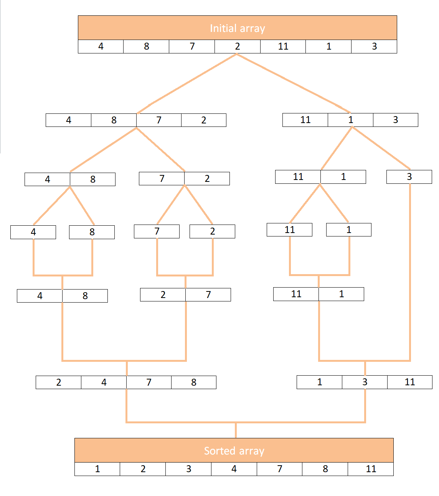

Сортировка слиянием
Сортировка слиянием использует концепцию разделения и слияния подмассивов для сортировки заданного списка элементов. Алгоритм разбивает массив на более мелкие подмассивы, пока они не станут достаточно простыми для непосредственного решения.
Вот шаги, которые выполняет сортировка слиянием:
- Разделите данный список на две половины (примерно равные половины в случае списка с нечетным числом элементов).
- Продолжайте разделять подмассивы таким же образом, пока у вас не останутся только одноэлементные массивы.
- Начиная с массивов с одним элементом, объедините подмассивы. Т.к. подмассивы уже отсортированы, то нам достаточно сравнивать элементы друг с другом по очереди и заносить в итоговый массив данные по порядку.
- Шаг 3 повторяется до полной сортировки массива.
Схема ниже дает представление, как сортировка слиянием работает с такими массивами, как [4, 8, 7, 2, 11, 1, 3]
Главное преимущество сортировки слиянием — она работает всегда с одной и той же скоростью на любых массивах одинаковой размерности.